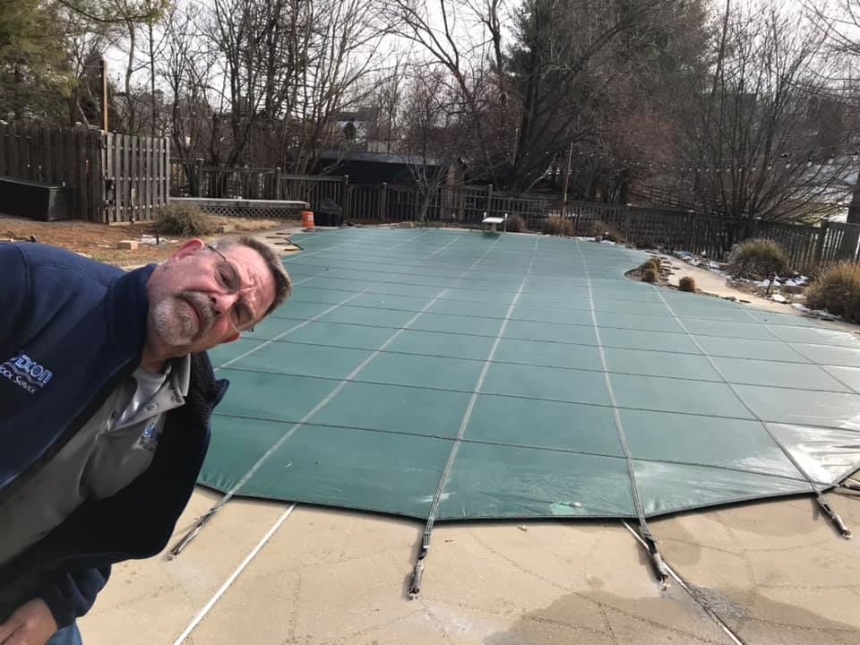

About Dixon
A Frederick-area family pool service
Dixon Pool Service was established in 2005 by Thomas Dixon Sr. and serves Frederick and surrounding counties.
Local history, focused service
The verified source describes Dixon Pool Service as a family business established in 2005. Its current service offering covers seasonal care, weekly maintenance, equipment, automation, heaters, cleaning, and safety covers.
Established2005
Service areaFrederick and surrounding counties
Business hoursMonday–Friday, 8 AM–4 PM
